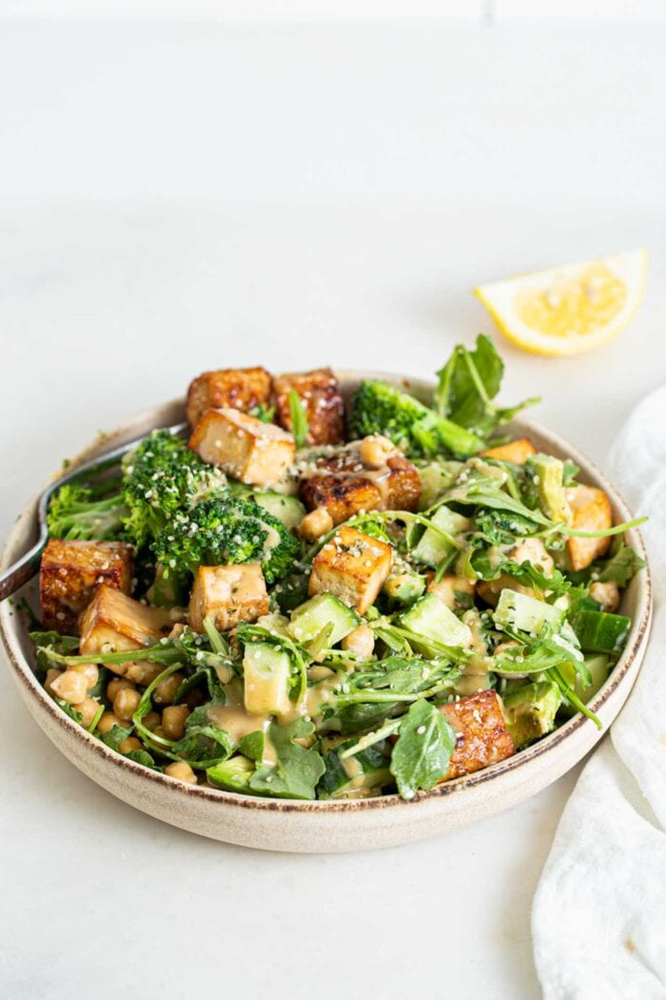

Vegan Protein Salad Bowl

Description
Searching for the perfect low carb, vegan high protein meal?
This high-protein vegan sald bowl is exactly what you're looking for! It packs in 30 g of plant-based protein along with 14 g of fibre for a nourishing and satisfying meal!
Ingredients
For the Marinated Tempeh
- One block of tempeh, cubed (approx. 250 g)
- 1/4 cup balsamic vinegar
- 2 tbsp soy sauce or gluten-free tamari
- 2 tbsp pure maple syrup
- 1 tbsp garlic powder
- A pinch of salt and pepper
For the Baked Tofu
- 350 g block of firm or extra-firm tofu
- 1 tsp garlic powder
- 2 tbsp soy sauce
- A pinch of salt and pepper
For the Salad
- 4 cups chopped and lightly steamed broccoli
- 4 cups or a bug handful of fresh arugula, spinach, or mixed salad greens
- 2 cups diced cucumber
- 8 tbsp hemp seeds (1-2 tbsp per salad)
- 1 avocado
- 1 cup chickpeas, drained and rinsed
- Tahini for drizzling over top or 1 batch maple dijon dressing or lemon tahini dressing
- Fresh lemon, for serving
- Salt and pepper
Directions
- Bake the Tempeh: To make the marinated tempeh, mix the marinade ingredients together in shallow dish then add the cubed tempeh. Let sit for 20-30 minutes. Option to press the tofu during this time. Bake at 400 F for 20 minutes on a baking tray lined with parchment paper. Once it’s baked, spoon any remaining marinade over the cubes.
- Bake the Tofu: To make the baked tofu, toss the cubed tofu with the soy sauce, garlic powder and a pinch of salt and pepper. Transfer to a parchment-paper lined baking pan and bake at 400 F for 20-30 minutes until browed. You can bake it at the same time as the tempeh.
- Steam the Broccoli: You can leave the broccoli raw but it’s suggested to steam it. Bring water to a boil then add the broccoli in a steamer basked, cover and cook for 4 minutes. Remove from heat.
- Assemble the Salad: Prepare 4 bowls with a handful of arugula or other greens of choice. Divide the rest of the ingredients between the 4 servings. Drizzle each with tahini and lemon or a dressing of choice and enjoy.
Back to Top
More Recipes!